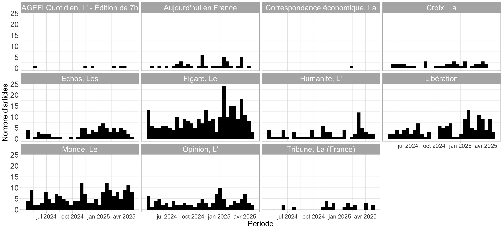
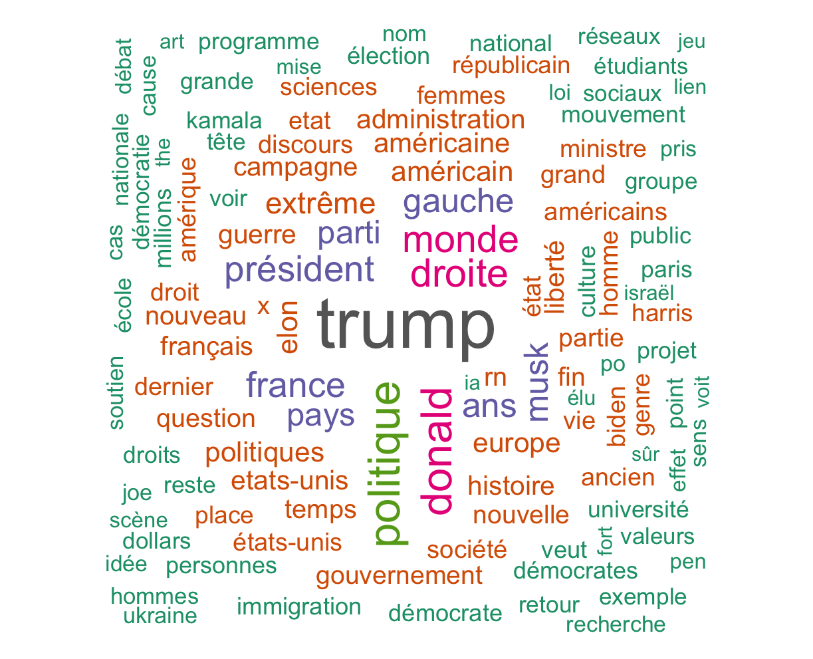
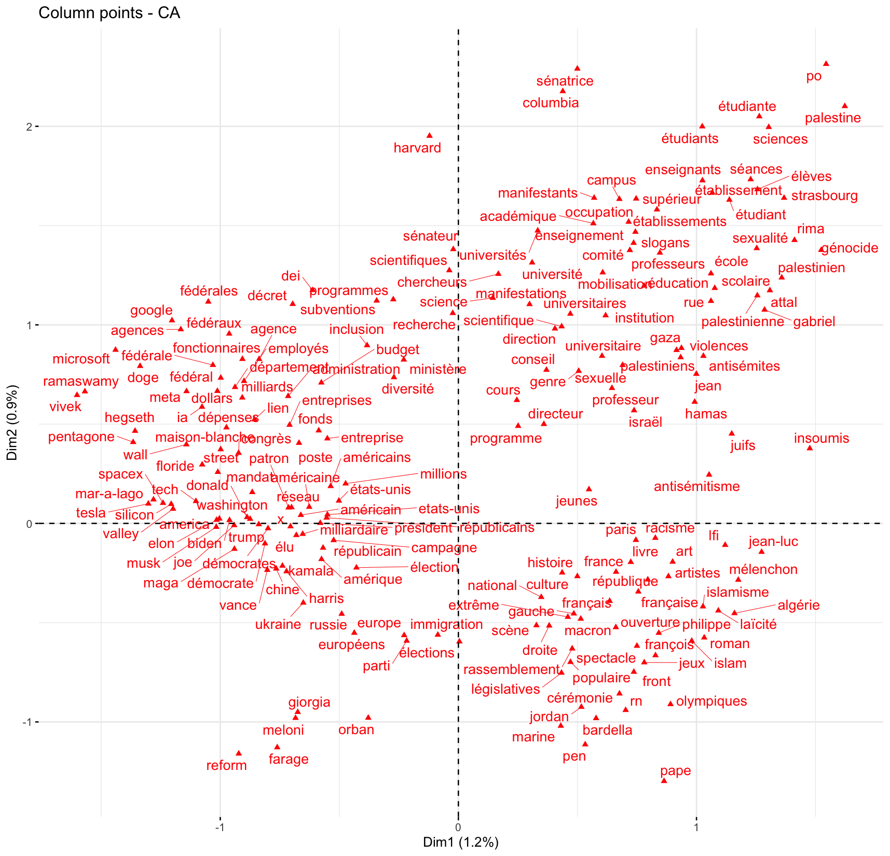
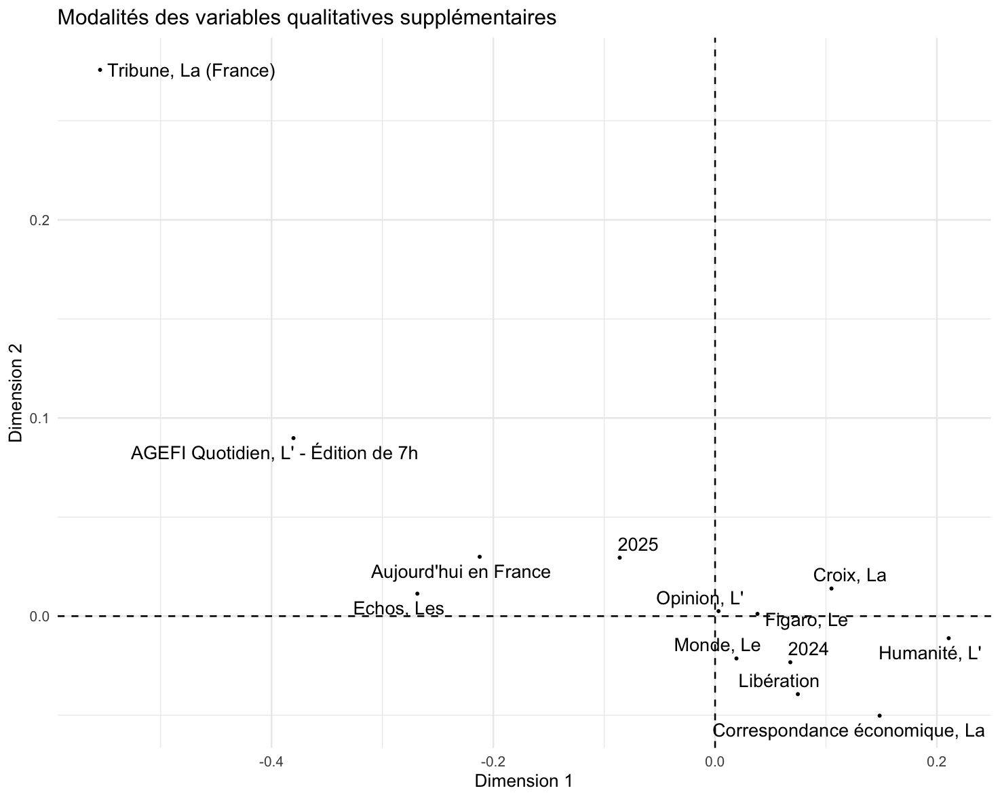
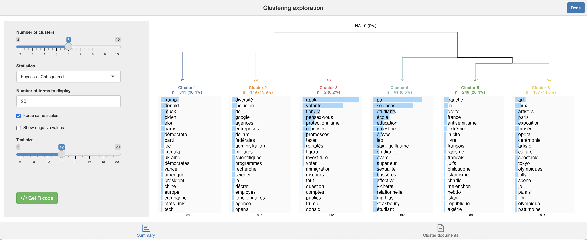
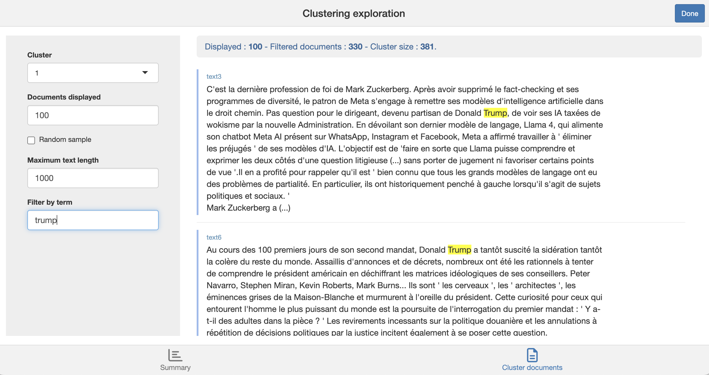

# On liste les packages dont on a besoin dans un vecteur nommé load.lib.
load.lib <- c("openxlsx","tidyverse", "questionr", "kableExtra", "esquisse", "FactoMineR", "explor","factoextra", "rainette", "quanteda", "quanteda.textstats", "quanteda.textplots","rainette")
install.lib <- load.lib[!load.lib %in% installed.packages()] # On regarde les paquets qui ne sont pas installés
for (lib in install.lib) install.packages(lib,dependencies=TRUE) # On installe ceux-ci
sapply(load.lib,require,character=TRUE) # Et on charge tous les paquets 8 Quelques outils textométriques dans R
Ce chapitre propose une brève introduction à l’analyse d’un corpus de textes, ici constitué a priori d’articles collectés sur Europresse (voir chapitre précédent).
Si on n’a pas de corpus, on peut utiliser un corpus utilisé pour l’exemple ici portant sur l’utilisation du terme “wokisme” dans les médias de la presse nationale.
À noter que la plupart des opérations présentées ici peuvent aussi être réaliser avec une application “clic-bouton” appelée Mendak et disponible ici ou ici (préférer a priori le deuxième lien : pour comprendre comment fonctionne Mendak - et l’analyse statistique textuelle surtout -, on pourra se reporter à ce tutoriel).
Un tutoriel de la manipulation des données textuelles dans R est également présenté en anglais ici.
8.1 L’exploration du corpus
Pour étudier la date de publication des articles, on dispose de la variable Date : “03 mai 2024”, “26 avril 2023”… soit un format JJ mois AAAA, ce qu’on peut indiquer à R en utilisant le format “Date” :
#ATTENTION, pour que la fonction suivante fonctionne il va peut-être falloir préciser qu'on est en français :
#- sur mac ou linux
Sys.setlocale("LC_TIME", "fr_FR.UTF-8")
#- sur windows
Sys.setlocale("LC_TIME", "French_France.1252")
# Conversion des dates en format Date
textes$Date_propre <- as.Date(textes$Date, format = "%d %B %Y")
#Si on veut par exemple extraire juste l'année :
# Extraire l'année
textes$Annee <- format(textes$Date_propre, "%Y")
#Une autre alternative pour extraire l'année à partir de Date est d'utiliser str_extract avec stringr (dans tidyverse)
textes$Annee <- str_extract(textes$Date, "[0-9]{4}$")
# "[0-9]{4}$" = extrais 4 chiffres entre 0 et 9 en fin de chaine. esquisser(textes)
ggplot(textes) +
aes(x = Date_propre) +
geom_histogram(bins = 30L, fill = "#000000") +
labs(x = "Période", y = "Nombre d'articles") +
theme_light() +
theme(
axis.title.y = element_text(size = 18L),
axis.title.x = element_text(size = 18L),
axis.text.y = element_text(size = 18L),
axis.text.x = element_text(size = 14L),
legend.text = element_text(size = 18L),
legend.title = element_text(size = 18L),
strip.text = element_text(size = 18L) #Augmenter taille des labels des facets
) +
facet_wrap(vars(NomSource))
On va créer une variable de comptage du nombre de mots dans le corps de textes des articles. La première étape est de transformer la colonne correspondante en format “corpus” avec le package quanteda :
#On s'assure que tous les types d'apostrophes sont bien remplacés par des espaces,
#Car quanteda le gère assez mal
textes$Textec = str_replace_all(textes$Texte, "[‘’´`ʻʼʽʾʿˊˋ˘˙’']", " ")
corpus <- corpus(sample$Desc_family)Le corpus est un ensemble de textes — ici, les 938 corps de textes des articles.
À partir de cet objet, on peut créer des “ tokens ”, c’est-à-dire les mots contenus dans les textes. Ce processus s’accompagne d’un léger nettoyage en vue de l’analyse :
On supprime la ponctuation (points, virgules, etc.) ainsi que les symboles (par exemple : * $ €…) afin d’éviter de les considérer comme des mots.
On supprime aussi les nombres écrits en chiffres (et non en toutes lettres). Un autre choix aurait pu être fait, mais il me semble raisonnable de les exclure ici.
tok <- tokens(corpus, remove_punct = TRUE,
remove_symbols=TRUE,
remove_numbers =TRUE)On peut ainsi créer une variable du nombre de mots par corps d’articles dans la base :
textes$nmots <- ntoken(tok)8.2 Le nettoyage des données
On retire un certain nombre de “mots vides ” (stop words) de l’analyse. Il s’agit de mots ou expressions très fréquents en français, qui apportent peu d’information sur le contenu des textes. Leur suppression permet de faire ressortir les éléments lexicaux réellement caractéristiques.
On utilise pour cela une liste proposée par Gilles Bastin qu’on va télécharger (ça permet de voir qu’il est possible de charger directement un fichier avec un url dans R !) :
stopwords_url <- "https://raw.githubusercontent.com/gillesbastin/french_stopwords/main/french_stopwords.csv"
stop_fr <- read_csv2(stopwords_url)On peut aussi enlever les mots liés à notre recherche sur le wokisme. En effet, l’idée n’est pas de se concentrer sur la présence du terme « wokisme » lui-même ou de ses variantes, mais plutôt sur ce qui est dit à propos du wokisme — c’est-à-dire les jugements, qualificatifs, oppositions, cadrages ou champs sémantiques associés
mot_woke<-c("wokisme","woke","wokiste")
tok <- tokens_remove(tok,c(stop_fr$token,mot_woke))On crée ensuite une “matrice de mots” (une document-feature matrix) :
#Create document-feature matrix (keep in lower case)
dtm <- dfm(tok, tolower = TRUE)
dtmLa matrice comprend en ligne les textes et en colonnes les mots du corpus. Chaque cellule indique le nombre de fois qu’un mot apparait dans le texte correspondant.
Arbitrairement, ce peut être une bonne idée de ne pas garder les mots trop rares (mettons au moins ceux qui ne sont présents qu’une seule fois). Ici, je garde même ceux qui sont présents plus de 5 fois au total sur l’ensemble du corpus.
dtm <- dfm_trim(dtm, min_docfreq = 5)8.3 Le nuage de mots
Après tout ce travail de préparation, on peut passer à une première analyse exploratoire ! Commençons simplement par afficher un nuage de mots dans lequel la taille des mots est proportionnelle à leur fréquence dans le corpus.
textplot_wordcloud(dtm, random_order = F, rotation = 0.25,min_size =1,max_words = 100,
color = RColorBrewer::brewer.pal(8, "Dark2"))
8.4 L’Analyse Factorielle des Correspondances
La matrice de mots se prête assez bien à une Analyse Factorielle des Correspondances (AFC), en considérant la matrice comme un tableau de contingence.
Il s’agit ici de mener une analyse exploratoire des principales associations récurrentes dans le corpus entre les mots, et si ces associations font ressortir des champs thématiques spécifiques, eux-mêmes associés à des journaux, des dates, des journalistes…
Pour simplifier encore plus et faire en sorte que l’analyse ne prenne pas trop de temps à tourner, je ne garde ici que les mots qui sont présents au moins 20 fois dans le corpus (3605 mots tout de même, et autant de colonnes dans l’analyse, et ensuite de points sur un graphique !).
#On ne garde que les termes mentionnés au moins 20 x ... !
dtm_reduc <- dfm_trim(dtm, min_docfreq = 20)
#On convertit la matrice en un data frame
dtm_pour_afc <- convert(dtm_reduc, to = "data.frame")
#On enlève la colonne doc_id, convertie en rownames
rownames(dtm_pour_afc) <- dtm_pour_afc$doc_id
dtm_pour_afc$doc_id <- NULL
#On ajoute trois colonnes de métadonnées sur les textes
dtm_pour_afc<-cbind(NomSource=textes$NomSource,Annee=textes$Annee,dtm_pour_afc)
ca<-CA(dtm_pour_afc,graph=F,quali.sup=1:2)On pourra éventuellement examiner l’éboulis des valeurs propres des axes, dénotant ainsi quelle part de l’information de la matrice est exprimée sur chacun des axes (on pourra n’analyser que les premiers axes, avant une coupure dans le diagramme à barres des valeurs propres).
fviz_eig(ca,ncp=20)Pour visualiser les mots sur le premier plan factoriel, il va être difficile de tous les projeter. Il est possible de ne privilégier que les 100 ou 200 mots qui contribuent le plus à ce plan factoriel :
fviz_ca_col(ca,select.col=list(contrib=200),axes = c(1, 2), repel = TRUE)
Clairement, le premier axe (horizontal) oppose des articles portant à gauche sur les États-Unis (et l’international) et à droite la France. Le second axe distingue surtout les articles sur la France entre en haut des articles sur l’institution scolaire / universitaire et en bas des articles sur le champ politique à proprement parler (cérémonie renvoie en fait aux jeux olympiques…).
Ces champs thématiques sont-ils associés à des journaux / années ? Malheureusement il n’y pas de fonction clef en main pour représenter les variables catégorielles supplémentaires dans le cadre du AFC avec factoextra…
quali_coord <- as.data.frame(ca$quali.sup$coord)
quali_coord$mod <- rownames(quali_coord)
quali_coord$mod <- str_remove(quali_coord$mod, "^[^\\.]+\\.")
ggplot(quali_coord, aes(x = `Dim 1`, y = `Dim 2`, label = mod)) +
geom_vline(xintercept = 0, linetype = "dashed")+
geom_hline(yintercept = 0, linetype = "dashed")+
geom_point(size = .5) +
geom_text_repel(size = 4) +
theme_minimal() +
labs(title = "Modalités des variables qualitatives supplémentaires",
x = "Dimension 1", y = "Dimension 2")On repère quand même que les articles sur les Etats-Unis sont plus associés à la presse économique, contre la presse généraliste et les titres de presse connotés dans le champ politique associés à des articles sur la France.

8.5 La classification de Max Reinert
On mobilise ici le package rainette créé par Julien Barnier qui reprend la méthode de classification de Max Reinert présentée dans Alceste et dans Iramuteq.
À partir de la matrice document-terme, on utilise la distance du khi-deux pour mesurer les similarités et différences entre les descriptions de familles.
La méthode repose sur un algorithme de classification hiérarchique descendante, que l’on peut décrire ainsi :
On commence par diviser les documents en deux groupes, de manière à ce qu’ils soient aussi différents que possible. Cette différence repose sur le fait que certains mots (tokens) sont fréquemment mentionnés dans un groupe et rarement dans l’autre, et inversement.
Parmi les deux groupes obtenus, on identifie le plus grand, que l’on divise à nouveau en deux sous-groupes.
Parmi les trois groupes ainsi créés, on divise à nouveau le plus grand, ce qui donne quatre groupes.
Et ainsi de suite…
Une description plus complète et rigoureuse de l’algorithme est disponible ici.
Cette étape est réalisée en exécutant la commande R suivante (ici, on demande à l’algorithme de créer jusqu’à dix groupes de documents) :
res <- rainette(dtm, k = 10)Combien de groupes ou de clusters de documents faut-il conserver dans la partition finale ?
Il s’agit ici d’un outil exploratoire, donc la meilleure approche consiste à examiner d’abord la partition en deux groupes, puis celle en trois groupes, etc.
À chaque étape, on interprète la nouvelle distinction qui émerge avec l’ajout d’un cluster.
On conserve autant de groupes qu’on est capable d’interpréter.
L’objectif est de comprendre les distinctions dans le corpus : trop de clusters nuisent à la lisibilité de l’analyse.
En pratique, au-delà de 8 à 10 clusters, la classification devient souvent peu informative, car il devient difficile de saisir d’un coup d’œil les différences entre les groupes.
L’exploration concrète des clusters de documents et des mots (tokens) qui les structurent est réalisée grâce à une application Shiny très pratique :
rainette_explor(res, dtm, corpus)
Chaque cluster est caractérisé par ses tokens les plus spécifiques, c’est-à-dire, en simplifiant, les mots qui sont souvent mentionnés dans un cluster mais peu présents dans les autres.
Comme il peut être difficile d’interpréter directement la spécificité de chaque cluster, il est utile de revenir aux descriptions textuelles pour voir comment ces termes spécifiques sont utilisés dans les phrases.
Dans le coin inférieur droit du panneau de l’application Shiny, cliquer sur “Documents du cluster” pour explorer ces occurrences.

Les clusters obtenus sont-ils associés à certains journaux / période de parution ?
Pour le savoir ajoutons une variable de cluster à la base de données :
textes$cluster <- cutree(res, k = 6) #Ou remplacer 6 par le nombre de clusters finalement retenuNote : normalement la méthode Reinert de classification s’applique à des segments de texte courts, et non à des textes longs. Il faudrait donc plutôt découper les textes en segments pour les classer. Voir la présentation de Julien Barnier pour ce faire !